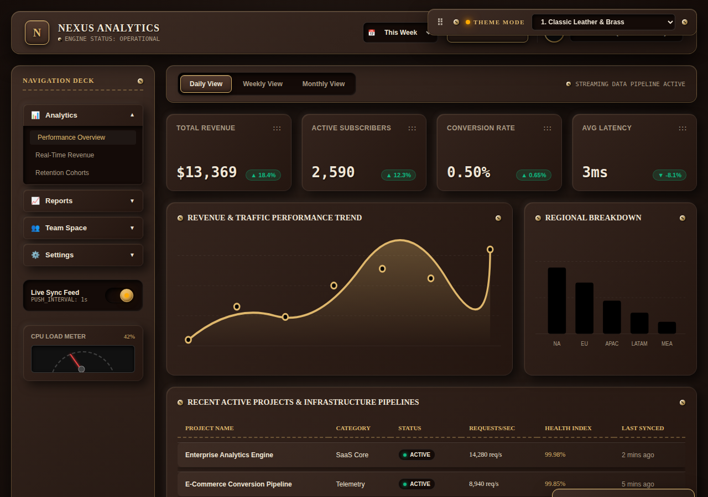
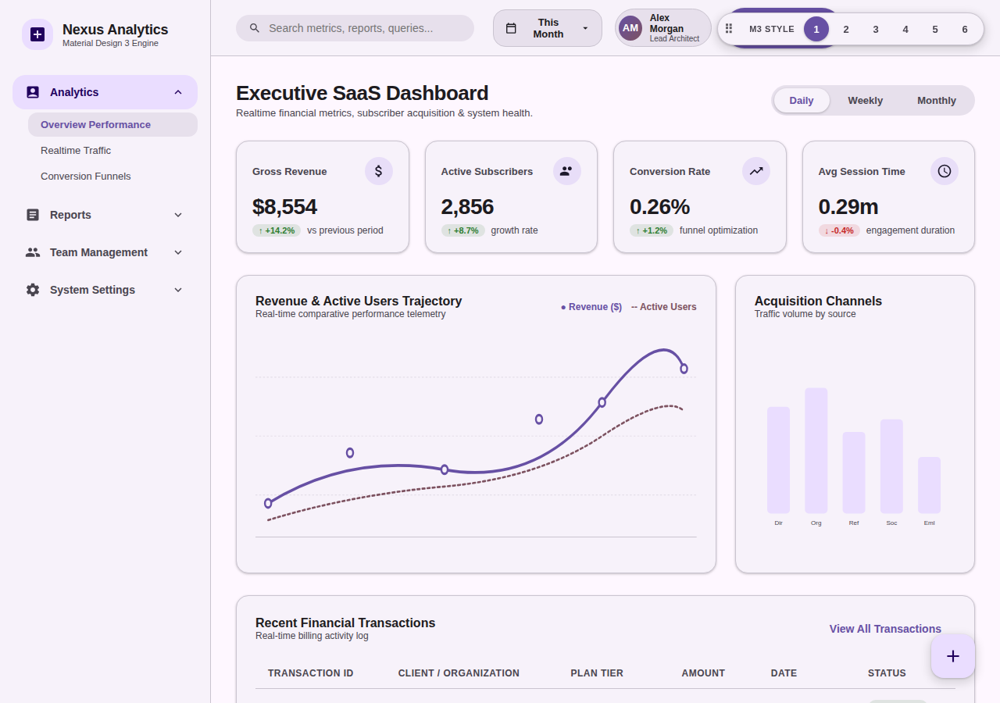
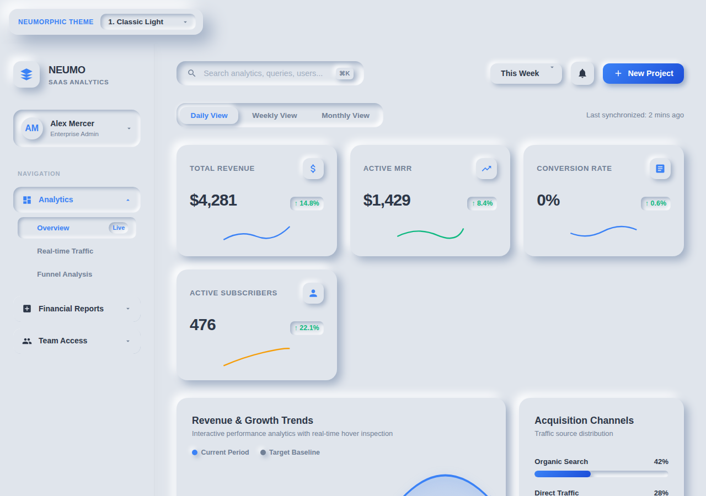
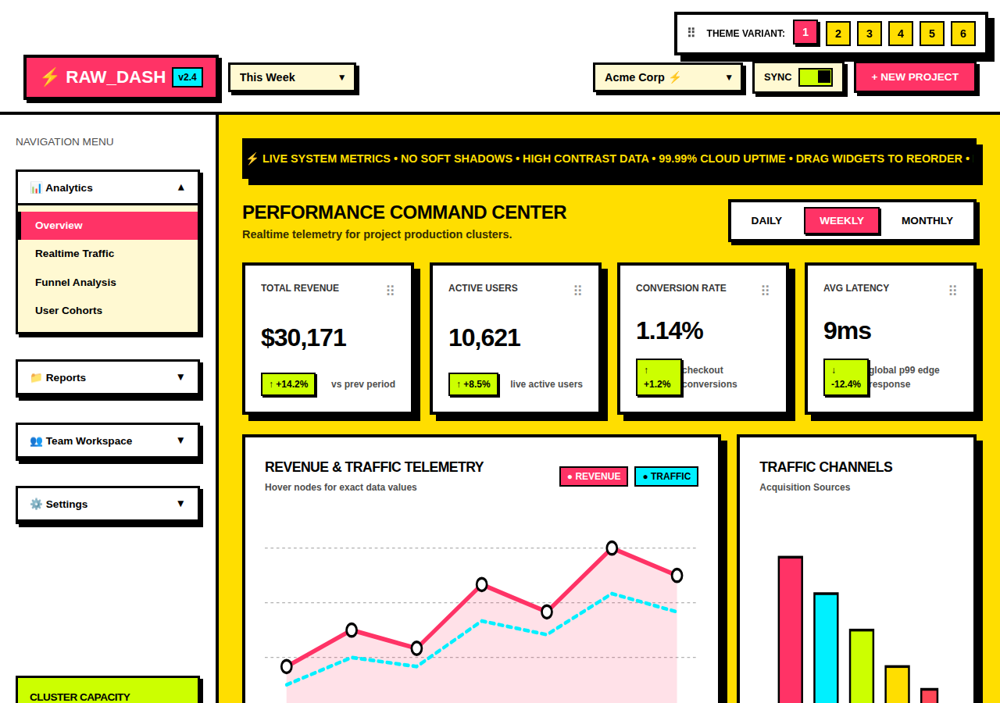
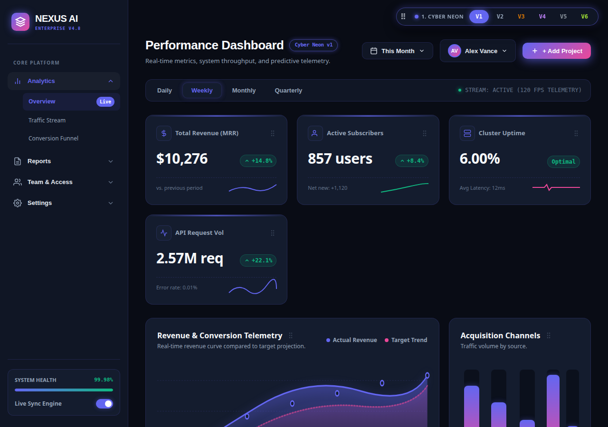
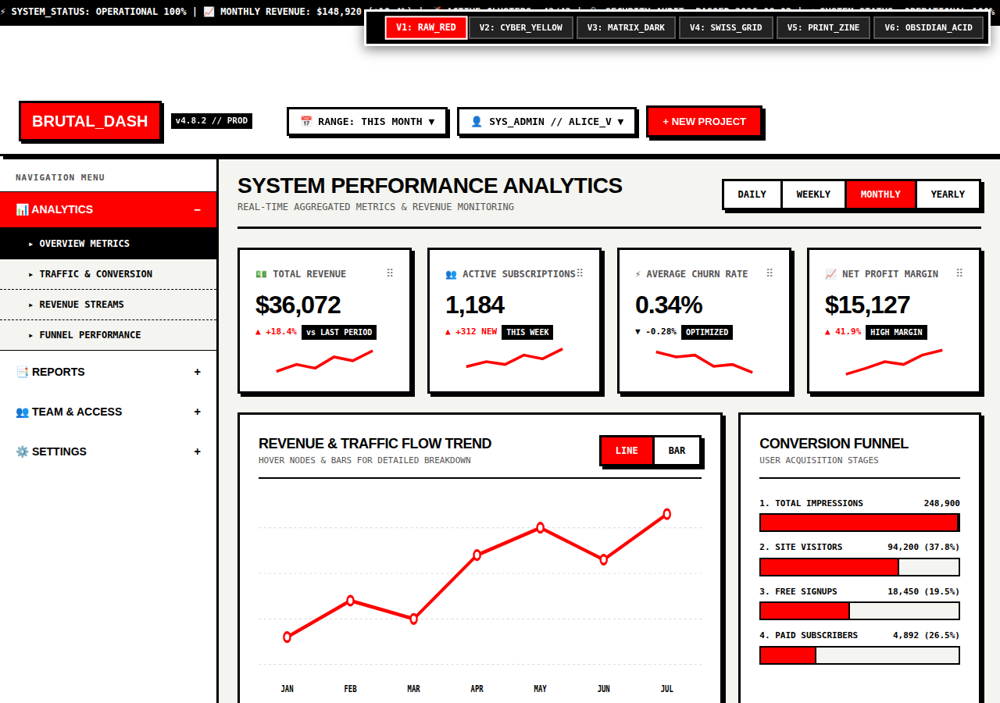
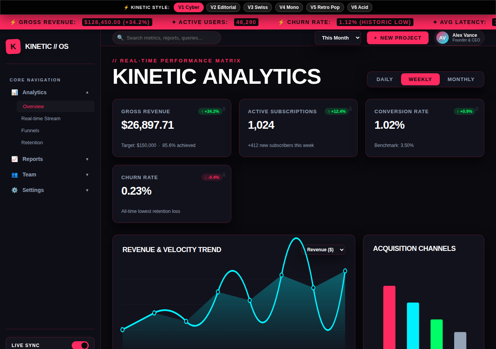
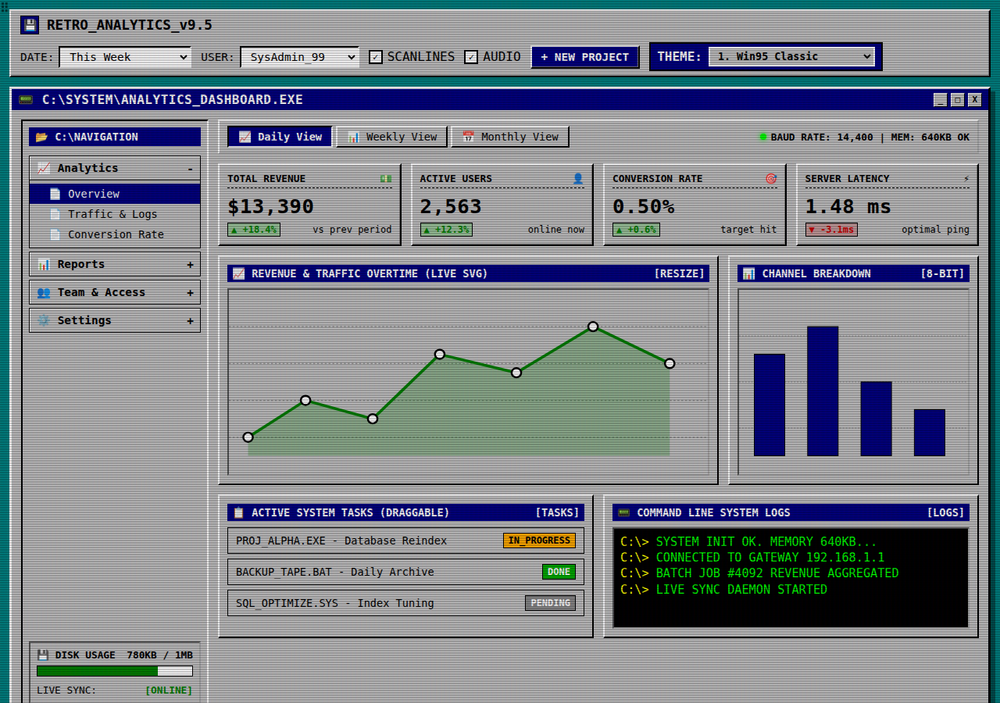
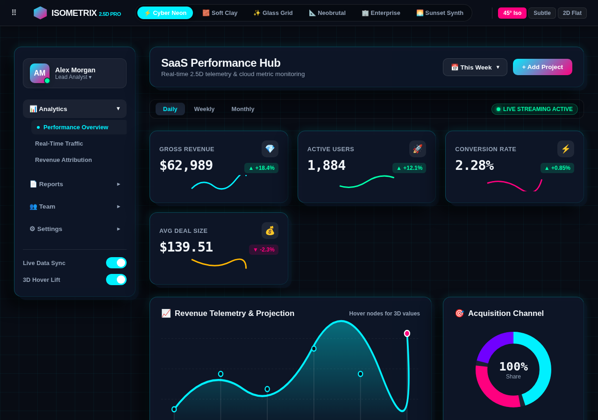
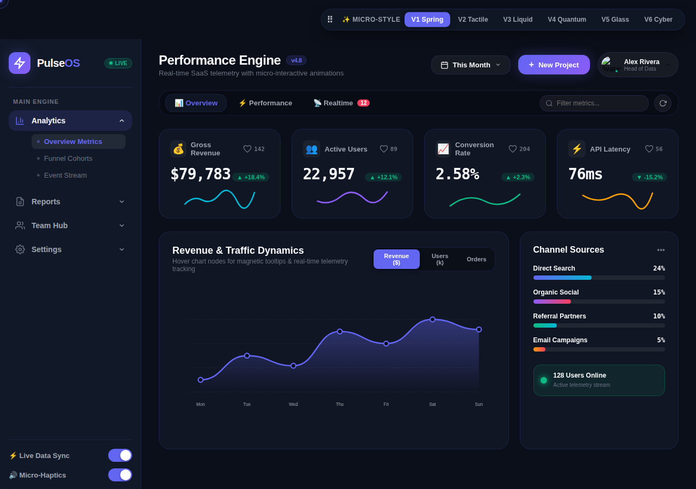

THE STYLE COLLECTION
다른 감각. 같은 가능성.
지금 끌리는 분위기로, 나만의 스타일을 발견하세요.

Skeuomorphism
현실 세계 물체의 질감과 입체감을 디지털 UI에 극적으로 재현한 정교한 스타일.
Flat Design
장식적 요소를 제거하고 명확한 미니멀리즘과 선명한 컬러에 집중한 디자인.

Material Design
Google의 종이와 잉크 메타포 기반 그림자와 아늑한 애니메이션의 표준 가이드.
Glassmorphism
반투명 블러 효과(Backdrop Blur)와 투명한 유리의 감각적인 레이어링 UI.

Neumorphism
부드러운 음영 조절로 배경에서 버튼이 돌출되거나 음각으로 파인 매끄러운 3D 효과.

Neo-Brutalism
두꺼운 검은 테두리, 강렬한 대비, 그림자 offset을 활용한 개성 넘치는 스타일.
Claymorphism
말랑말랑한 점토(Clay) 느낌의 내/외부 둥근 그림자와 귀여운 3D 둥근 모서리 UI.
Aurora UI
몽환적이고 부드러운 오로라빛 메시 그래디언트 배경과 서정적 비주얼.

Dark Mode UI
눈의 피로도를 줄이고 OLED 디스플레이의 깊은 블랙과 형광 네온 컬러를 강조한 UI.

Brutalism
정형화된 가이드라인을 거부하고 날것 그대로의 생생한 조형감을 표현한 디자이너의 예술적 UI.

Kinetic Typography
움직이는 텍스트, 다이내믹 루핑 마키와 폰트 가변 애니메이션의 화려한 조화.

Retro UI
80~90년대 픽셀 아트, 윈도우 95 감성과 레트로 게임 콘솔 인터페이스.

Isometric UI
3D 투시도 각도로 평면 UI에 입체 공간감을 불어넣는 등각 투영 비주얼.
Biomorphic Organic
자연의 유기적인 곡선, 미생물/물방울 형태(Blob)와 유연한 흐름의 디자인.

Micro Interaction
사용자 액션에 즉각적으로 피드백을 주는 디테일하고 섬세한 마이크로 애니메이션.
일치하는 스타일이 없어요. 검색어를 바꾸거나 다른 분위기를 선택해보세요.